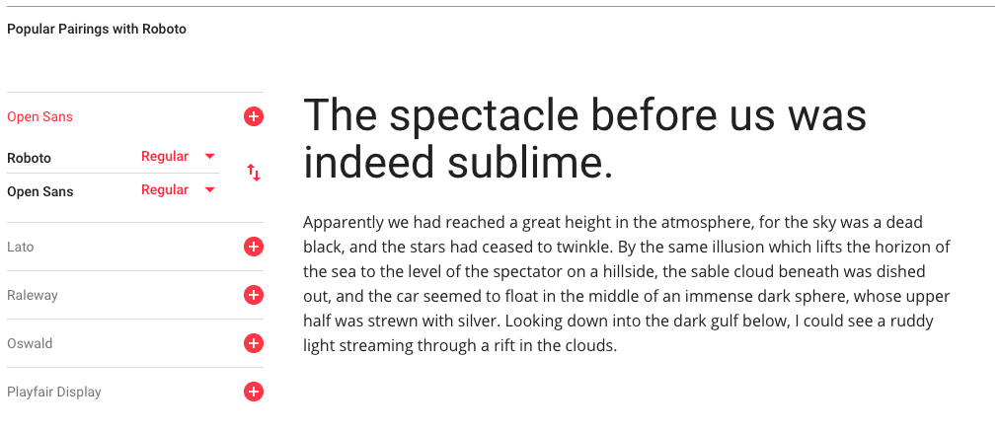

You can also copy the generated style rule to use in the stylesheet.

The following example of a post has no typographic rules applied.
It's not easy to see which part is the post and which part is the by line, is it?
Let's try adding some rules to make it easier to read.
I didn't have to change much, I just applied a couple of rules and now it's easy to separate the content.
A few more rules makes it easier to separate each part of the content.
These examples touch on a few of the basic ways we can adjust the typography of a web page: font-size, color and font-style.
There are many more ways to adjust the text, some more noticeable than others. Let's review some of them.
You have probably worked with font-size before, so I won't spend to much time here, but line-height is related to font-size and is very important for legibility.
In CSS, the different betwee line-height and font-size is split between the top and bottom of a line.
line-height: 1;letter-spacing is what it sounds like, the space between letters. In traditional typography, letter spacing is known as tracking. However, it is not kerning which is a more specific application of spacing between different types of letters.
letter-spacing: 1px;word-spacing is also what it sounds like, the space between letters.
word-spacing: normal;font-weight is the thickness of the characters in the text.
There are some descriptive values for font-weight like lighter, bold, and normal.
It can also be described numerically on a scale from 100 to 900 with 400 being regular.
font-weight: normal;Text is typically used in a few different contents on the web.
Serifs help make text more legible by guiding the eye through the individual letters of a word.
However, as more reading is done on the web, which supports lots of fonts, sans-serif fonts are more common for text bodies.
For the assignment this week we will focus on font pairing. This is basically what it sounds like, choosing two font that work together for different parts of a website.
We'll choose one font for the main text of the user posts in our application and a second font for the post information.
When choosing two fonts, there's a few ways to approach the relationship between them.
In most cases, we will choose fonts that are
For something a little more noticeable, choose fonts that have some
For a bolder style, choose fonts that have obvious
Last week we looked at changing the layout of the web app for different device and screen sizes.
Does our typography also need to be updated?
When reading on your phone is the screen closer or farther away then reading something on a computer? Most likely, it will be a little closer, in which case the type face may appear larger relative to the screen space.
A good rule of thumb is to hold your phone at the distance you would normally read with your computer in the background. Does the font size look relatively the same? If not, we can add a media query to change the size.
Here, instead of updating specific elements of the page, we can change the baseline for the font-size and line-height. If using em values, the rest of the page will update accordingly.
Other than font-size, another component of readability is the number of characters in a line. There are different rules of thumb as to how many characters should be on one line of text. Some say
As designers, we can these values to get a sense of a baselines, and then use our eyes to confirm.
The Wayne Gretzky quote I've been using is exactly 66 characters.
The number of characters depends on the font-size and paragraph width.
At 1em the line doesn't take up a whole line in the paragraph.
We can change the width to fix it.
At 2em there is not enough text per line.
We don't have more width so let's take it down a bit. 1.35em looks similar to the above example.
We're going to use Google Fonts as a starting point for creating a typographic hierarchy.
To use a font on your website, choose a font by clicking "Select this font" and then open the window that appears, go to the "Embed" section and copy the "@import" CSS rule to your CSS style sheet. You don't need the style tags.
You can also copy the generated style rule to use in the stylesheet.
You can try pairing fonts directly in Google Fonts before choosing to add them.
